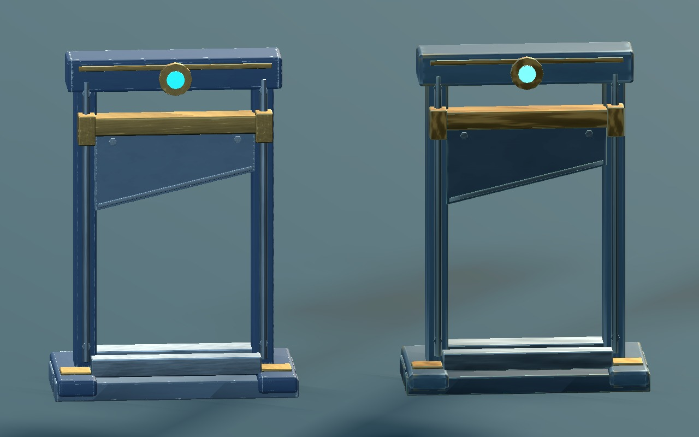

단두대부터 대형 커터까지 8종의 재질을 다듬었습니다. 차분한 황동 반사, 남색 도장과 작은 모서리 마모, 칼날·피스톤의 가공 결을 구분했습니다.

수정 v3이전 v1/v2왼쪽이 수정 재질입니다. 두 모델에 같은 조명과 중성 반사 환경을 적용했습니다.
게임 표시 크기는 기존 1.75× 카메라의 1280×800 캡처입니다. 재질 비교용 반사 환경만 더했으며 본 게임 조명은 바꾸지 않았습니다. 충격 흡수 프레임은 기존 장착 위치를 유지했습니다.
Blender 작업본 · 모델 목록 · 연결 안내
일반 표면과 청록 발광을 분리하고 4장 텍스처를 공유합니다. 외골격 v4는 그대로이며, 수정한 모델은 후속 스킬 구현에 쓸 준비 자산입니다.